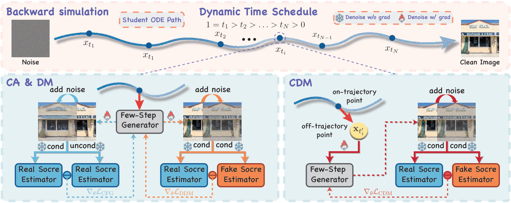
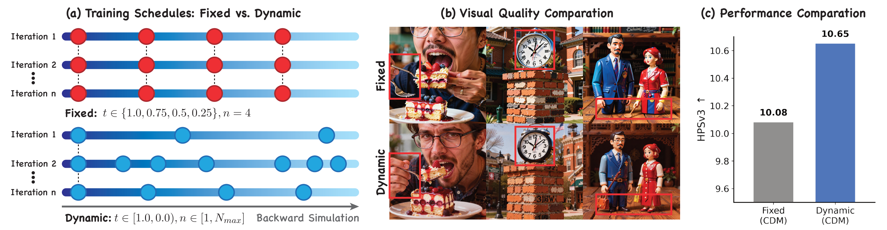
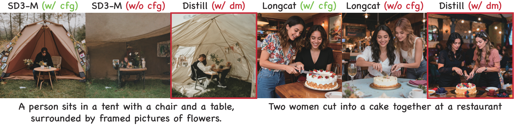
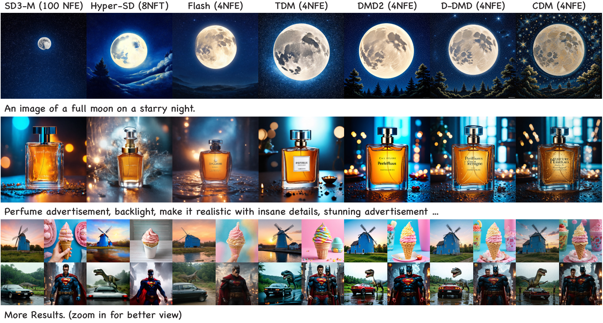
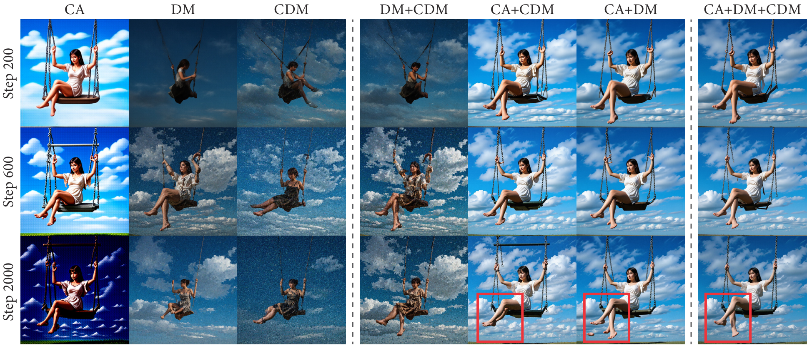

Abstract
Step distillation has become a leading technique for accelerating diffusion models, among which Distribution Matching Distillation (DMD) and Consistency Distillation are two representative paradigms. While consistency methods enforce self-consistency along the full PF-ODE trajectory to steer it toward the clean data manifold, vanilla DMD relies on sparse supervision at a few predefined discrete timesteps. This restricted discrete-time formulation and mode-seeking nature of the reverse KL divergence tends to exhibit visual artifacts and over-smoothed outputs, often necessitating complex auxiliary modules—such as GANs or reward models—to restore visual fidelity.
In this work, we introduce Continuous-Time Distribution Matching (CDM), migrating the DMD framework from discrete anchoring to continuous optimization for the first time. CDM achieves this through two continuous-time designs. First, we replace the fixed discrete schedule with a dynamic continuous schedule of random length, so that distribution matching is enforced at arbitrary points along sampling trajectories rather than only at a few fixed anchors. Second, we propose a continuous-time alignment objective that performs active off-trajectory matching on latents extrapolated via the student's velocity field, improving generalization and preserving fine visual details. Extensive experiments on different architectures, including SD3-Medium and Longcat-Image, demonstrate that CDM provides highly competitive visual fidelity for few-step image generation without relying on complex auxiliary objectives.
Method Overview

Overview of Continuous-Time Distribution Matching (CDM). Top: Our approach employs a dynamic continuous time schedule during backward simulation, sampling intermediate anchors uniformly from (0, 1]. Bottom Left: CFG augmentation (CA) and distribution matching (DM) operate on this dynamic schedule to align text-image conditions and data distributions at on-trajectory anchors. Bottom Right: To address inter-anchor inconsistency, the proposed CDM objective explicitly extrapolates off-trajectory latents using the predicted velocity.
Our unified training objective combines three complementary losses:
- CFG Augmentation Loss (LCA) — anchors structure and semantic text-image alignment;
- Distribution Matching Loss (LDM) — provides on-trajectory distributional supervision, aligning the student to the teacher's CFG-free distribution;
- CDM Loss (LCDM) — extends supervision to off-trajectory latents via velocity-driven extrapolation, mitigating numerical truncation errors during few-step inference.
Key Insight: Schedule Decoupling

Empirical evidence of schedule decoupling. (a) Conventional distillation strictly anchors backward simulation to predefined discrete inference timesteps. In contrast, our dynamic scheduling optimizes over uniformly sampled continuous timesteps t ∈ (0, 1] at each iteration. (b) Visually, the dynamically scheduled model produces finer details and fewer artifacts than the strictly aligned baseline. (c) Quantitatively, it also attains a higher HPSv3 score, indicating that exact discrete alignment is not only unnecessary but in fact restrictive—motivating our continuous-time formulation.
Understanding the DM Loss

Visual evidence on the role of the DM loss. Samples from teacher models (SD3-Medium and Longcat-Image) with and without CFG, compared against student models distilled with the DM loss alone. Students distilled with the DM loss alone closely match their teachers' CFG-free samples, indicating that the DM loss is not a mere stabilizer but the key driver that aligns the student to the teacher's CFG-free distribution.
Quantitative Results
Comparison of different methods on SD3-Medium and Longcat-Image. CDM achieves state-of-the-art performance across all metrics at only 4 NFE, without requiring any real images, GANs, or reward models.
SD3-Medium (1024×1024)
| Method | NFE | Aesthetic ↑ | DPGBench ↑ | PickScore ↑ | HPSv3 ↑ | CLIPScore ↑ | Image-Free | Continuous |
|---|---|---|---|---|---|---|---|---|
| Base (SD3-Medium) | 100 | 5.885 | 85.04 | 21.73 | 8.189 | 28.60 | - | - |
| Hyper-SD | 8 | 5.180 | 80.43 | 20.82 | 6.054 | 27.93 | ✗ | ✓ |
| Flash | 4 | 5.968 | 80.47 | 21.69 | 8.282 | 28.18 | ✗ | ✗ |
| TDM | 4 | 6.013 | 83.12 | 21.61 | 8.468 | 27.63 | ✓ | ✗ |
| DMD2 | 4 | 6.038 | 83.96 | 21.58 | 8.419 | 27.56 | ✓ | ✗ |
| D-DMD | 4 | 6.038 | 84.52 | 21.85 | 9.176 | 27.69 | ✓ | ✗ |
| CDM (Ours) | 4 | 6.075 | 85.26 | 21.95 | 9.561 | 27.98 | ✓ | ✓ |
Longcat-Image (1024×1024)
| Method | NFE | Aesthetic ↑ | DPGBench ↑ | PickScore ↑ | HPSv3 ↑ | CLIPScore ↑ | Image-Free | Continuous |
|---|---|---|---|---|---|---|---|---|
| Base (Longcat-Image) | 100 | 5.926 | 87.08 | 21.65 | 9.450 | 26.78 | - | - |
| DMD2 | 4 | 5.800 | 87.12 | 21.07 | 8.803 | 26.99 | ✓ | ✗ |
| D-DMD | 4 | 5.782 | 88.04 | 21.23 | 9.629 | 26.57 | ✓ | ✗ |
| CDM (Ours) | 4 | 5.919 | 88.35 | 21.53 | 10.65 | 26.72 | ✓ | ✓ |
Best and second-best results are highlighted in bold and underline, respectively. The base model serves as a reference and is excluded from the ranking.
Qualitative Comparison on SD3-Medium

Qualitative comparison on SD3-Medium. CDM produces more photorealistic results with richer details than competing methods. All results are generated using the same initial noise and random seed for fair comparison. CDM consistently yields sharper textures and fine-grained details, and stronger semantic adherence to multi-entity compositional prompts.
More Qualitative Results
SD3-Medium (4 NFE)

Longcat-Image (4 NFE)

Ablation Study

Qualitative ablation of loss components across training steps. Left: Individual losses (CA, DM, CDM) in isolation. Right: Pairwise and full combinations. Partial combinations suffer from brightness collapse or degraded local fidelity at later stages, whereas our full objective (CA+DM+CDM) effectively preserves both global semantic coherence and local details.
Loss Components Ablation
| Configuration | AES ↑ | DPG ↑ | PICK ↑ | HPSv3 ↑ | CLIP ↑ |
|---|---|---|---|---|---|
| (a) Single Loss Ablation | |||||
| w/o LCA | 5.861 | 72.87 | 21.05 | 8.128 | 24.78 |
| w/o LDM | 6.016 | 84.57 | 21.75 | 8.954 | 27.66 |
| w/o LCDM | 6.067 | 85.12 | 21.85 | 9.153 | 27.91 |
| (b) Dual Loss Ablation | |||||
| w/o LDM & LCDM | 4.634 | 3.45 | 17.50 | -10.15 | 14.60 |
| w/o LCA & LCDM | 5.787 | 70.60 | 20.82 | 7.258 | 25.31 |
| w/o LCA & LDM | 5.778 | 72.38 | 20.80 | 7.331 | 24.78 |
| Full CDM | 6.075 | 85.26 | 21.95 | 9.561 | 27.98 |
Core Mechanism Design Ablation
| Model Variant | AES ↑ | DPG ↑ | PICK ↑ | HPSv3 ↑ | CLIP ↑ |
|---|---|---|---|---|---|
| (a) Time Schedule | |||||
| w/ Fixed Schedule | 6.051 | 83.84 | 21.89 | 9.482 | 27.75 |
| (b) Off-trajectory Perturbation | |||||
| w/o Perturbation (on-traj) | 6.027 | 84.43 | 21.94 | 9.374 | 27.90 |
| w/ Gaussian Perturbation | 6.040 | 84.65 | 21.92 | 9.516 | 27.88 |
| (c) Target Latent Construction | |||||
| w/ Full-trajectory target | 6.026 | 85.14 | 21.92 | 9.346 | 27.97 |
| Full CDM | 6.075 | 85.26 | 21.95 | 9.561 | 27.98 |
BibTeX
@article{liu2025cdm,
title = {Continuous-Time Distribution Matching for Few-Step Diffusion Distillation},
author = {Liu, Tao and Yan, Hao and Chen, Mengting and Hu, Taihang and
Yue, Zhengrong and Pan, Zihao and Lan, Jinsong and Zhu, Xiaoyong and
Cheng, Ming-Ming and Zheng, Bo and Wang, Yaxing},
journal = {arXiv preprint},
year = {2025}
}